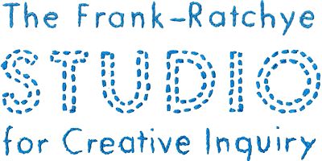
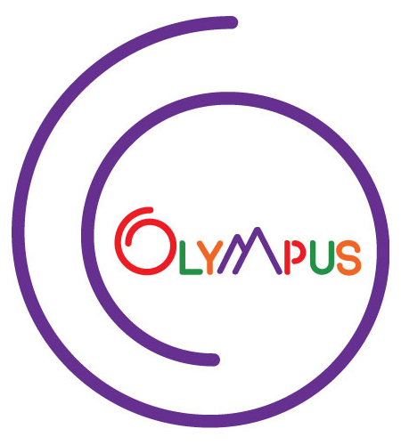
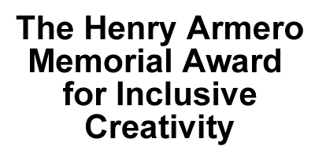
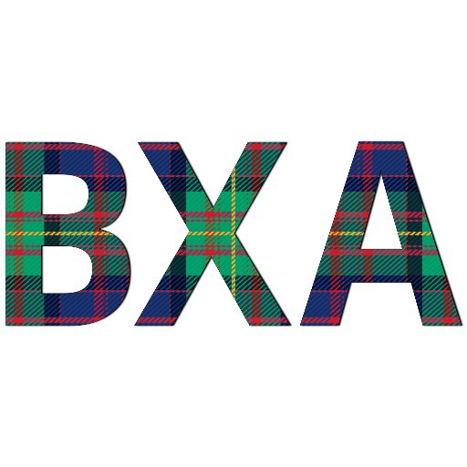

Supporters
The Wick Editor is supported by generous grants from organizations which support our mission, as well as donations from the community.
Grant support for the Wick Editor is provided by:




You can support the Wick Editor on Patreon!
Special thanks to our supporters:
Gold Supporters:
Victoria Rojas
Anonymous
Bronze Supporters:
Golan Levin